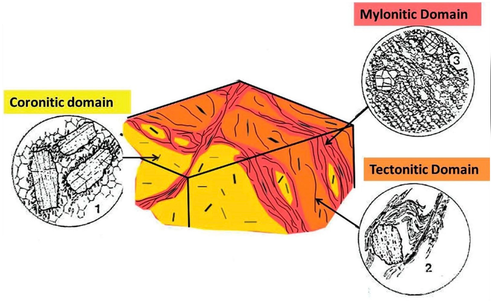
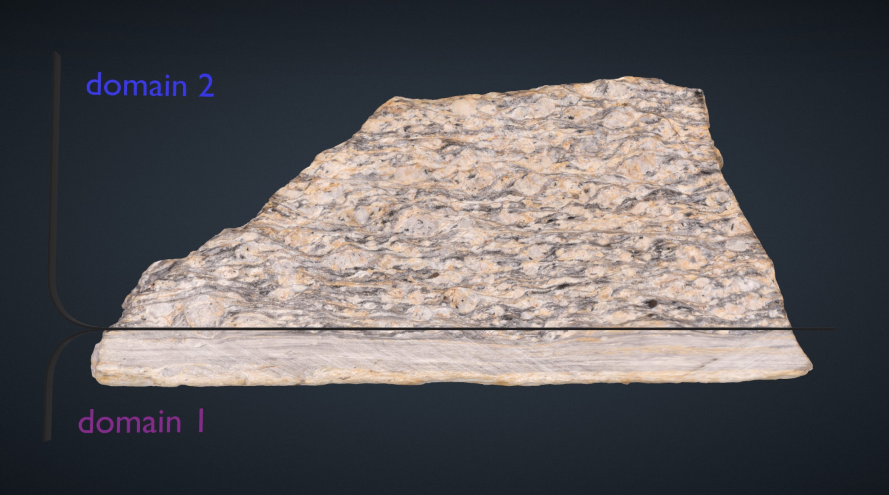
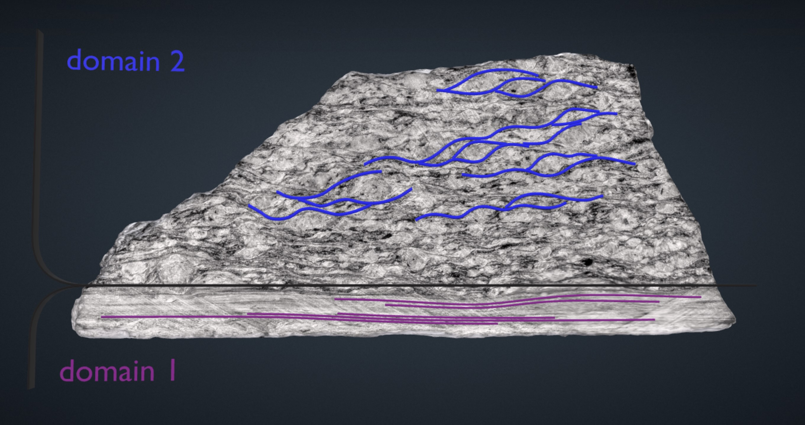
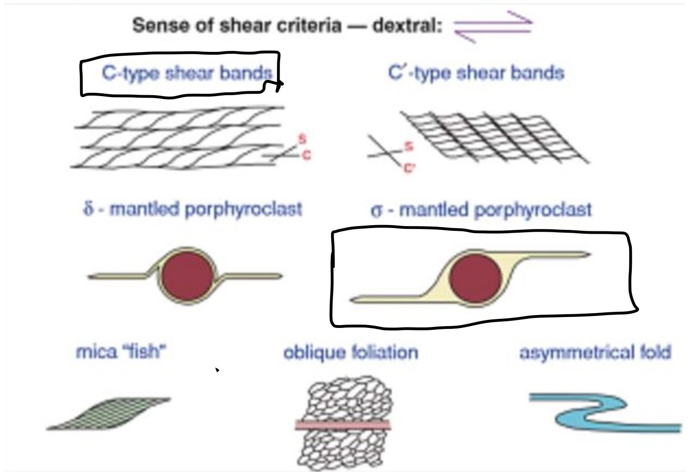

Defined by fine-grained lamination of dark and white layers. In this domain no grains can be identified with the naked eye. The foliation is pervasive and continuous → Mylonitic foliation.
These observations can be made on the left and right side of the sample, which are orthogonal to the foliation. In front, observe the characteristics of the planar structures, where we have continuous and wide-spaced foliation.
Defined by a pervasive planar foliation:

Together, the σ-clasts and C–S structures are kinematic indicators, suggesting dextral shearing along the main foliation. Kinematic indicators are observed on the left and right side of the hand specimen. These are parallel to the LINEATION that can be observed only on the top (and bottom) side but not on the front side of the hand sample.
